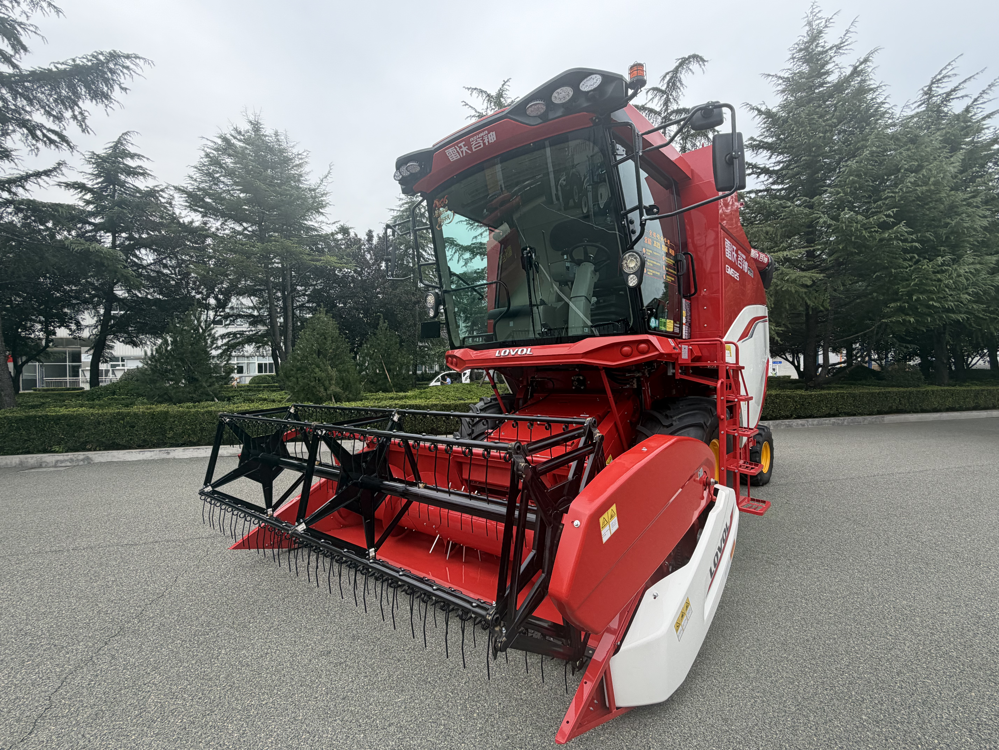
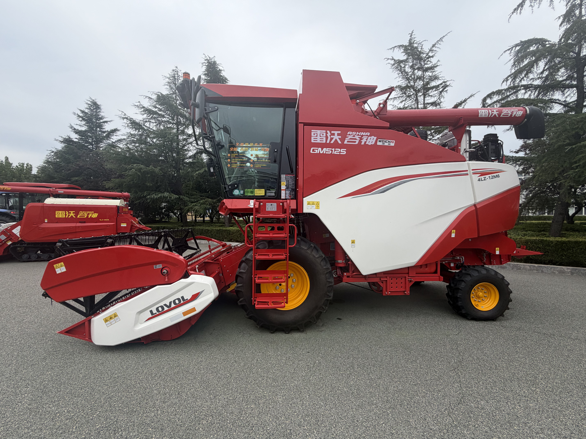
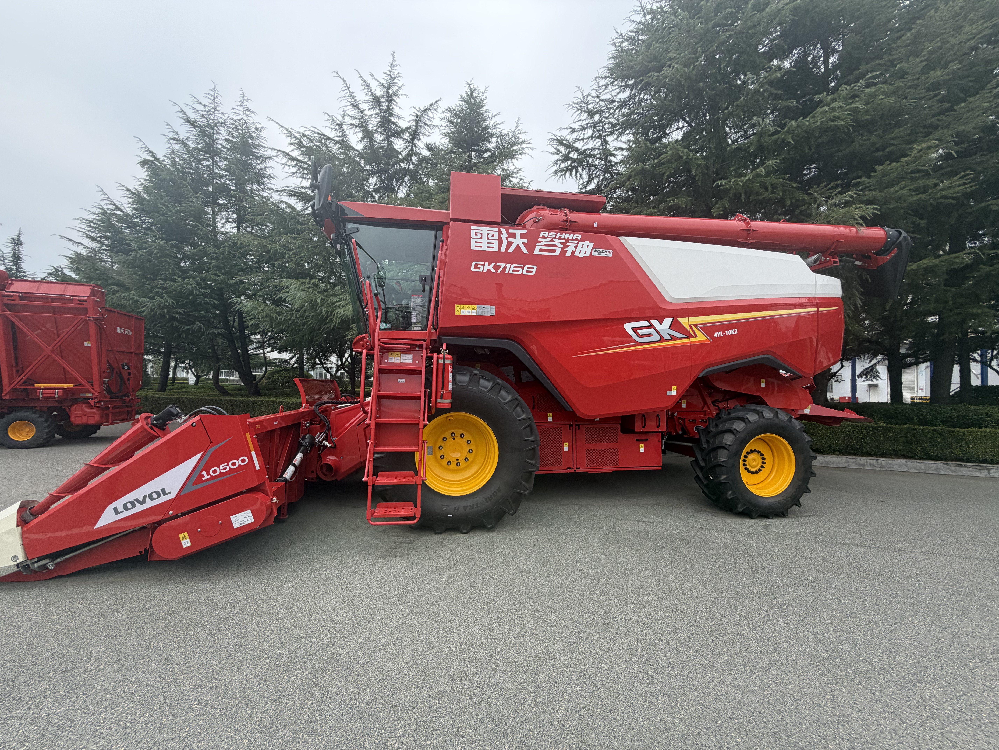
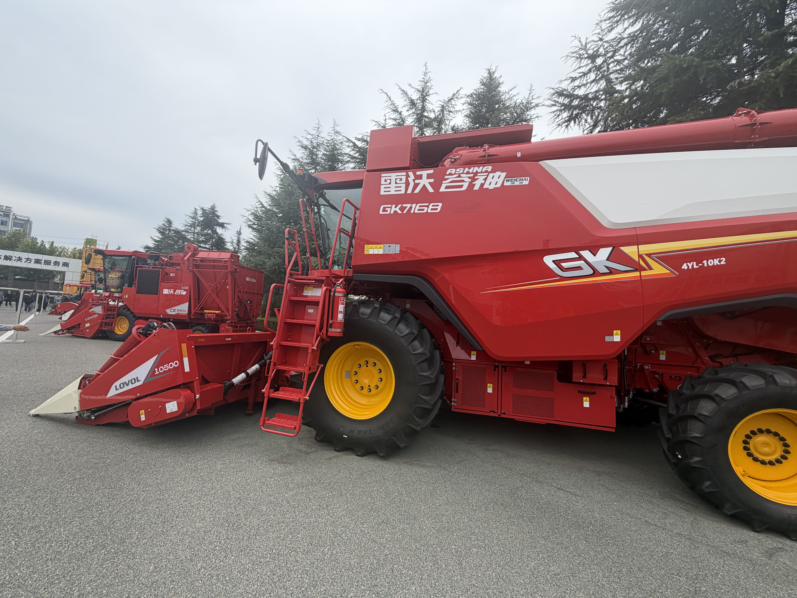
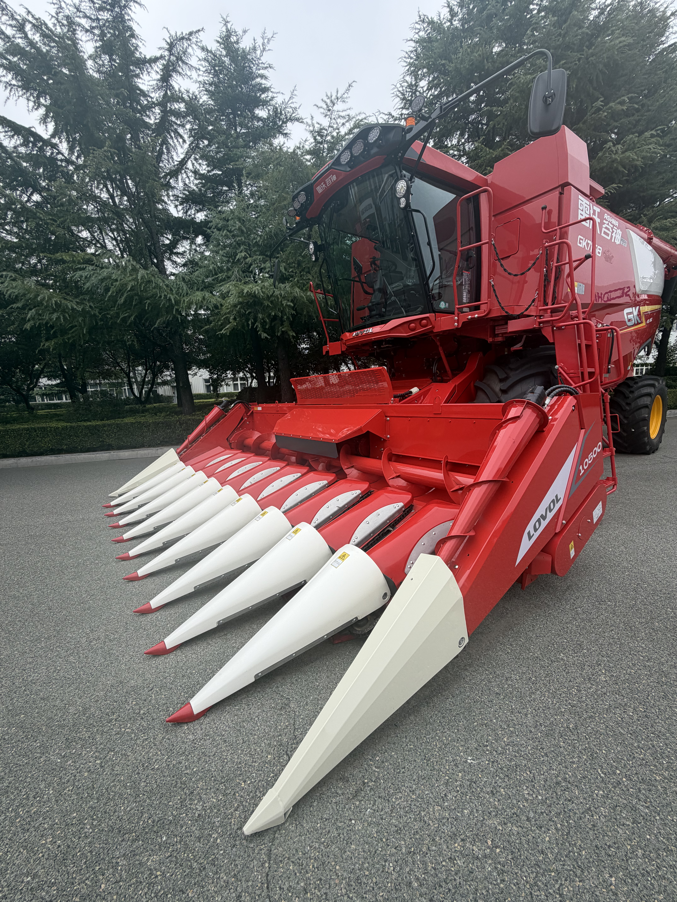
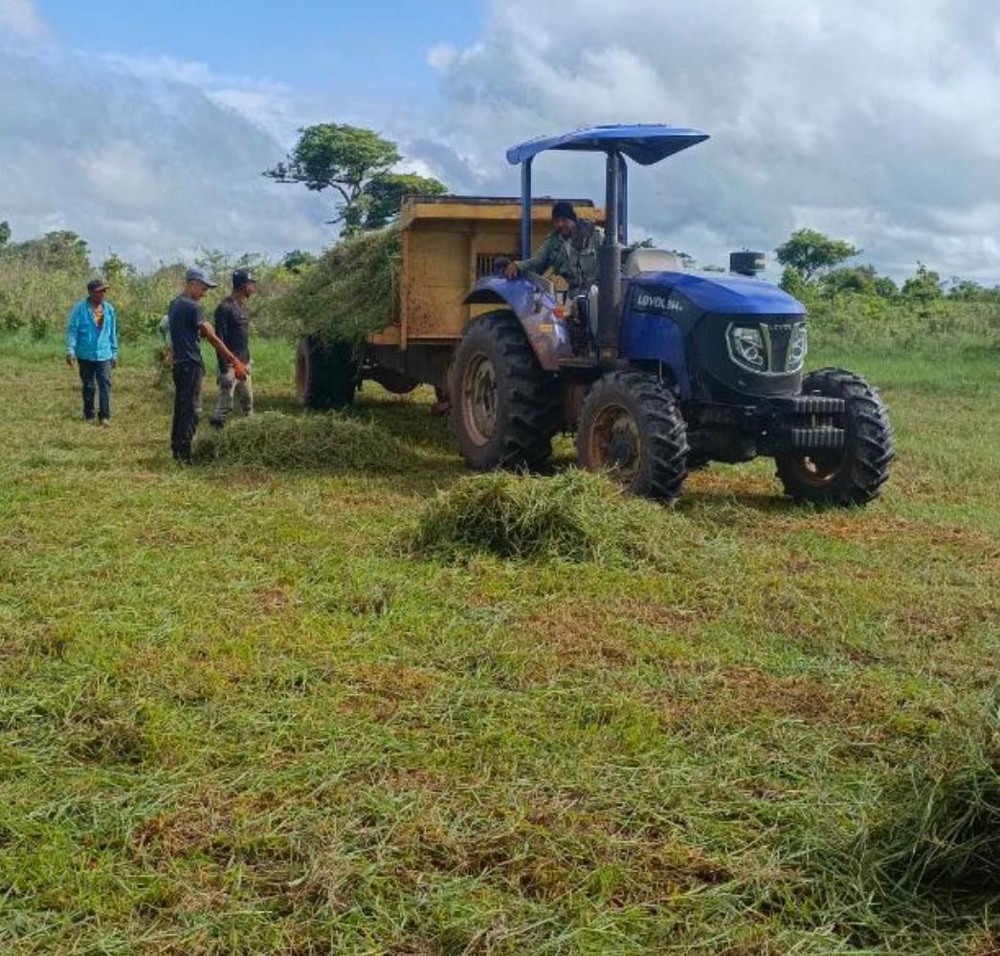
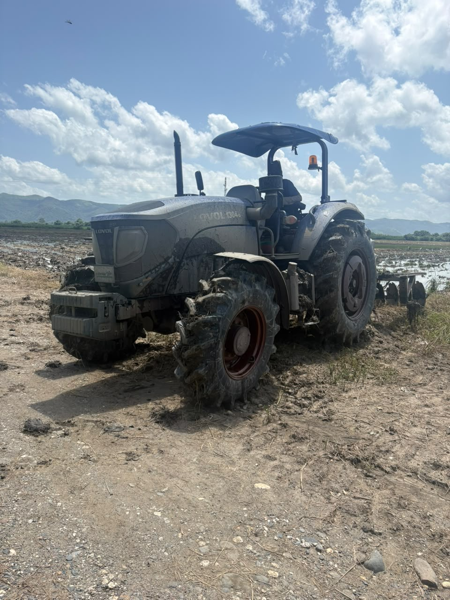
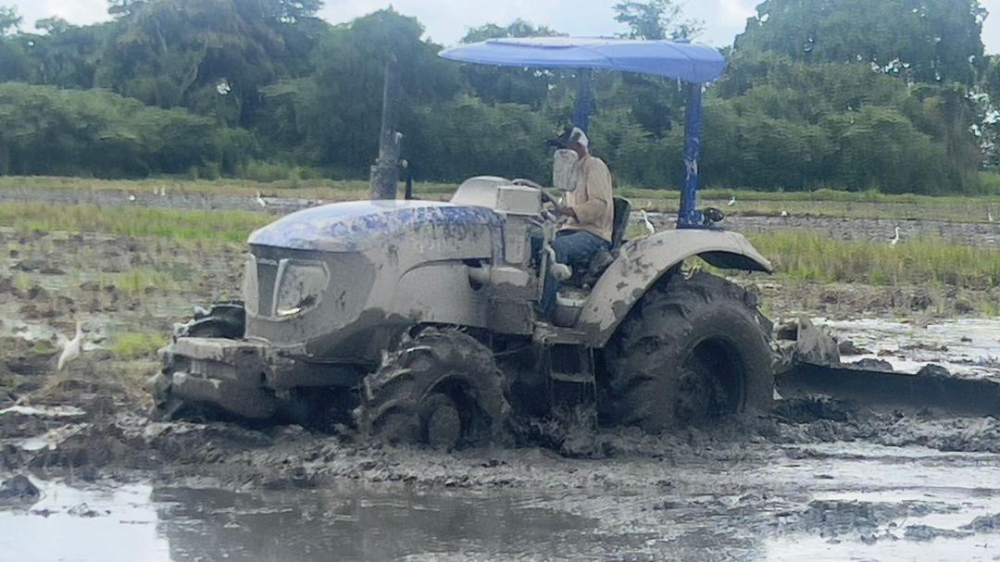
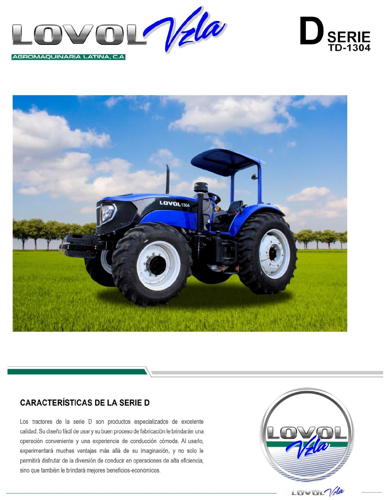
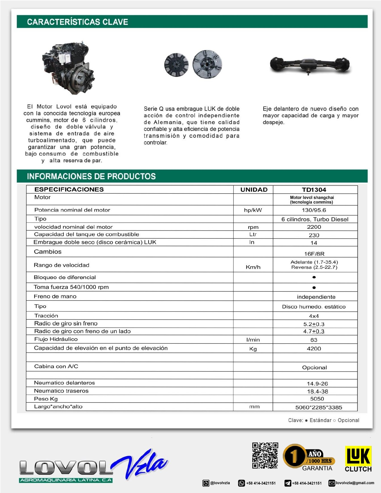

Tractor agrícola
LOVOL — TD 1304
Caballaje130 HP

La fuerza que mueve tu tierra





En Agromaquinaria Latina C.A. somos distribuidores de LOVOL desde 2002. Creemos que el progreso del campo comienza con las herramientas adecuadas.
Nuestro compromiso es acercar maquinaria agrícola de alto rendimiento a productores venezolanos que buscan potencia, eficiencia y durabilidad.
Queremos ayudarte a encontrar la maquinaria adecuada para que tu operación agrícola continúe creciendo.
Modelos disponibles
Aspectos clave
Contacto directo
Descubre nuestra selección de tractores LOVOL para diferentes necesidades del campo venezolano.

Conoce nuestros tractores LOVOL TD 1304 de 130 HP y TD 904 de 90 HP. Consulta sus especificaciones y disponibilidad con nuestro equipo.
Cada jornada exige potencia, resistencia y confianza. Conoce cinco aspectos importantes al elegir tu tractor.
Maquinaria preparada para afrontar diferentes exigencias agrícolas.
Equipos diseñados para acompañar el trabajo diario en el campo.
Consulta la disponibilidad de componentes para cada modelo.
Solicita información sobre condiciones y cobertura de garantía.
Consulta opciones de mantenimiento y asistencia para tu tractor.
Descubre nuestra maquinaria en su elemento: el campo.

Rendimiento en cada jornada.
Tecnología agrícola.
Potencia para avanzar.Nuestro equipo está disponible para ayudarte a conocer nuestros modelos y encontrar la alternativa adecuada para tu operación.
Solicita especificaciones, disponibilidad y una cotización personalizada de este modelo.
Cotizar este tractor
